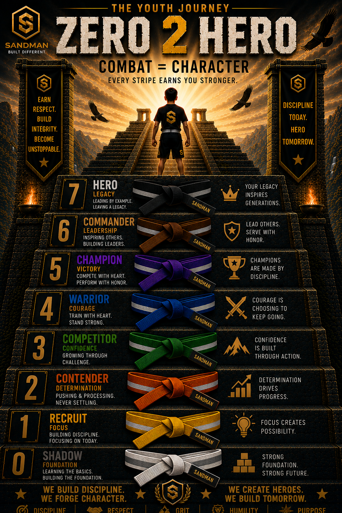

Zero2Hero
Foundry 8 is the youth development phase of Sandman Combat™. Athletes progress through the Zero2Hero journey in Wrestling or Kickboxing, building technical skill, confidence, discipline, accountability, and composure through age-appropriate training.
Every athlete starts at zero. Every step is earned.
Zero2Hero
Foundry 8 es la fase de desarrollo juvenil de Sandman Combat™. Los atletas avanzan por el camino Zero2Hero mediante Lucha o Kickboxing, desarrollando habilidad técnica, confianza, disciplina, responsabilidad y compostura con entrenamiento apropiado para su edad.
Todos comienzan desde cero. Cada paso se gana.

Choose Your Discipline
Select Wrestling or Kickboxing to explore the Zero2Hero training standard, discipline focus, and athlete journey.
Elige Tu Disciplina
Selecciona Lucha o Kickboxing para conocer el estándar de entrenamiento, el enfoque de la disciplina y el camino Zero2Hero.
Wrestling
Zero2Hero Wrestling develops movement, position, takedowns, control, confidence, discipline, and earned progression.
Lucha
Lucha Zero2Hero desarrolla movimiento, posición, derribos, control, confianza, disciplina y progreso ganado.
Kickboxing
Zero2Hero Kickboxing develops stance, movement, striking fundamentals, defense, coordination, confidence, and control.
Kickboxing
Kickboxing Zero2Hero desarrolla postura, movimiento, fundamentos de golpeo, defensa, coordinación, confianza y control.